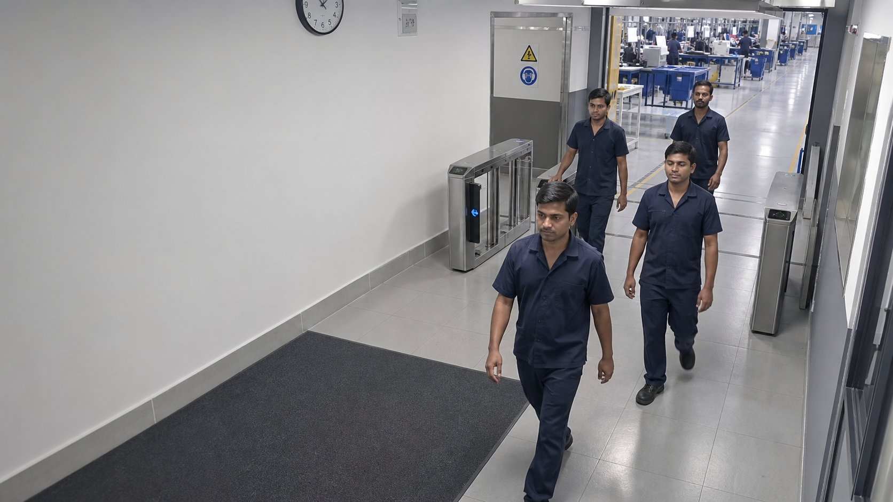
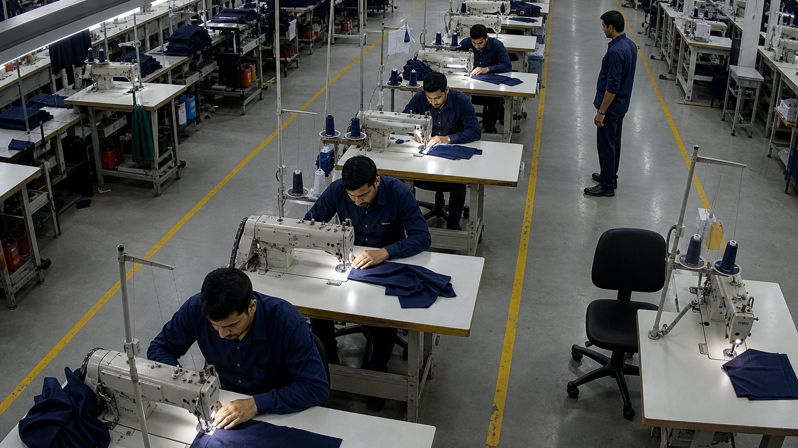

Face check-ins46of 52 scheduled men
GARMENT PLANT / Shift A control room
4 cameras online 08:42:16
RESPONSIBLE COMPUTER VISION
Attendance at the gate.
Activity at the machine.
Face recognition is used only at the employee entrance for check-in and absence. Production cameras monitor worker-to-machine presence without identifying faces.
Working at machines42current production signal
Away from station4not a disciplinary decision
Absent at entry6no face check-in today
LIVE CCTV ZONES
Entry attendance & machine activity
Face matchedWorkingAway

CAM 01 · ENTRY GATE · FACE CHECK-INLIVEID 014 · MATCHED
ID 019 · MATCHED
ID 032 · MATCHED
ID 035 · MATCHED

CAM 02 · SEWING LINE A · STATION STATELIVEWORKING
WORKING
WORKING
WORKING
AWAY FROM MACHINE
EMPTY STATION
SHIFT RECORD
Gate attendance & active time
| Worker | Department | Check-in | Active time | Status |
|---|
SYSTEM DESIGN
Two cameras. Two privacy rules.
Faces are matched only at the entry gate. Production cameras detect occupied or empty machine stations without identifying individual workers.
PythonOpenCVYOLOFace embeddingsObject trackingFastAPIPostgreSQLEdge AI